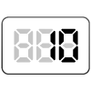
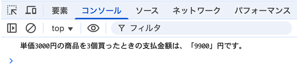

【010】ダイアログに入力された値を計算して表示

- 入力した値を取得「prompt( )」：この場合入力された値は、必ず「文字列」になります
- お金の計算の場合、文字列を切り捨て「整数化」します「parseInt( )」：integer（整数）
- Mathオブジェクトで四捨五入します
- 出力は、テンプレートリテラルで「文字列」と「変数」を連結して表示します
問題
- ダイアログに入力された値を計算して表示
// 単価の値を入力 // 購入個数の値を入力 // 整数化 // 支払金額の合計を求める // 四捨五入 // コンソールに表示
